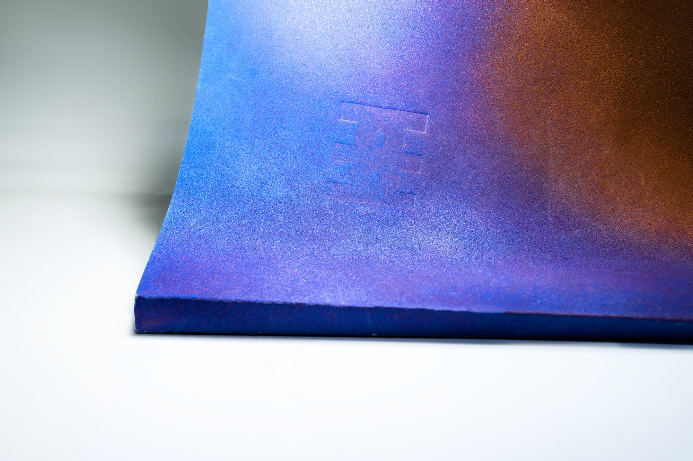
AnimA | Thesis Brand Identity
AnimA is a cryptocurrency for artists designed to address the issues arising from the extremely high prices in the contemporary art market. Based on research conducted for this dissertation, this cryptocurrency was developed to tackle the challenges many artists face in the art market. The objective was to create a friendly and distinctive Brand Identity that fosters a sense of community, empowering each artist to succeed in the art world. This was accomplished by using bold colors to differentiate it from the competition, modern typography that complements the illustration style, and a cohesive visual system extending from the website and book to the website animation.
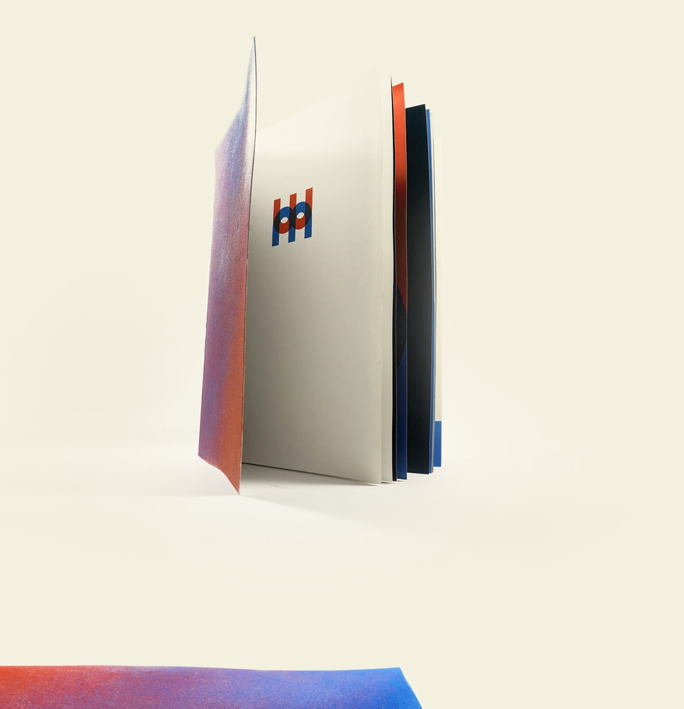
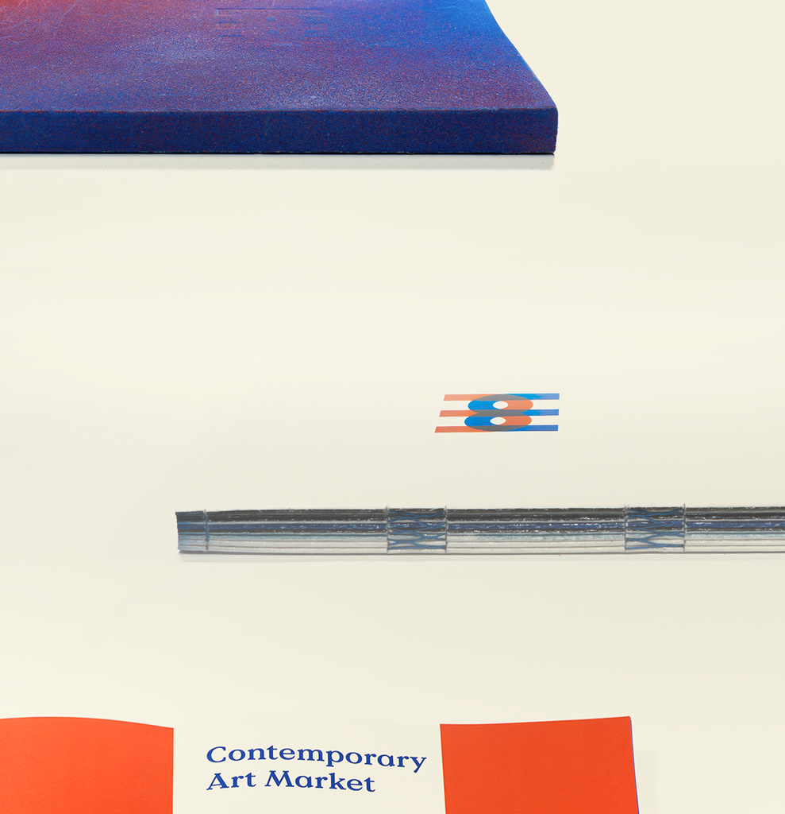
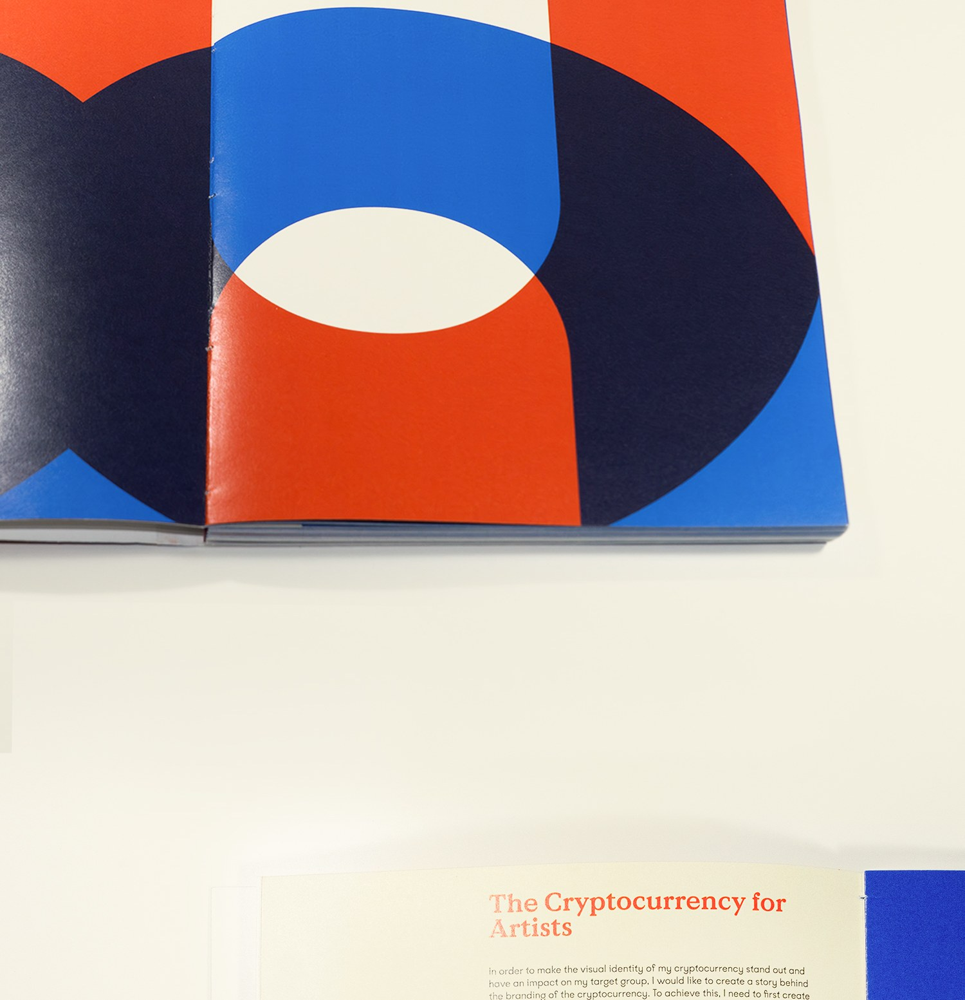
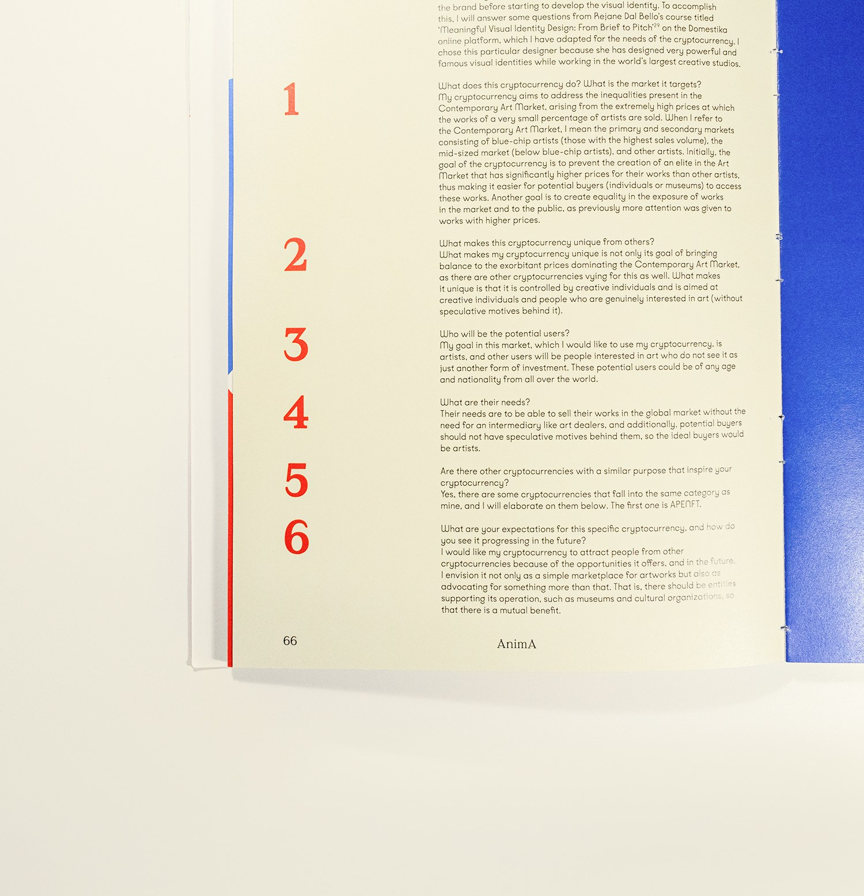
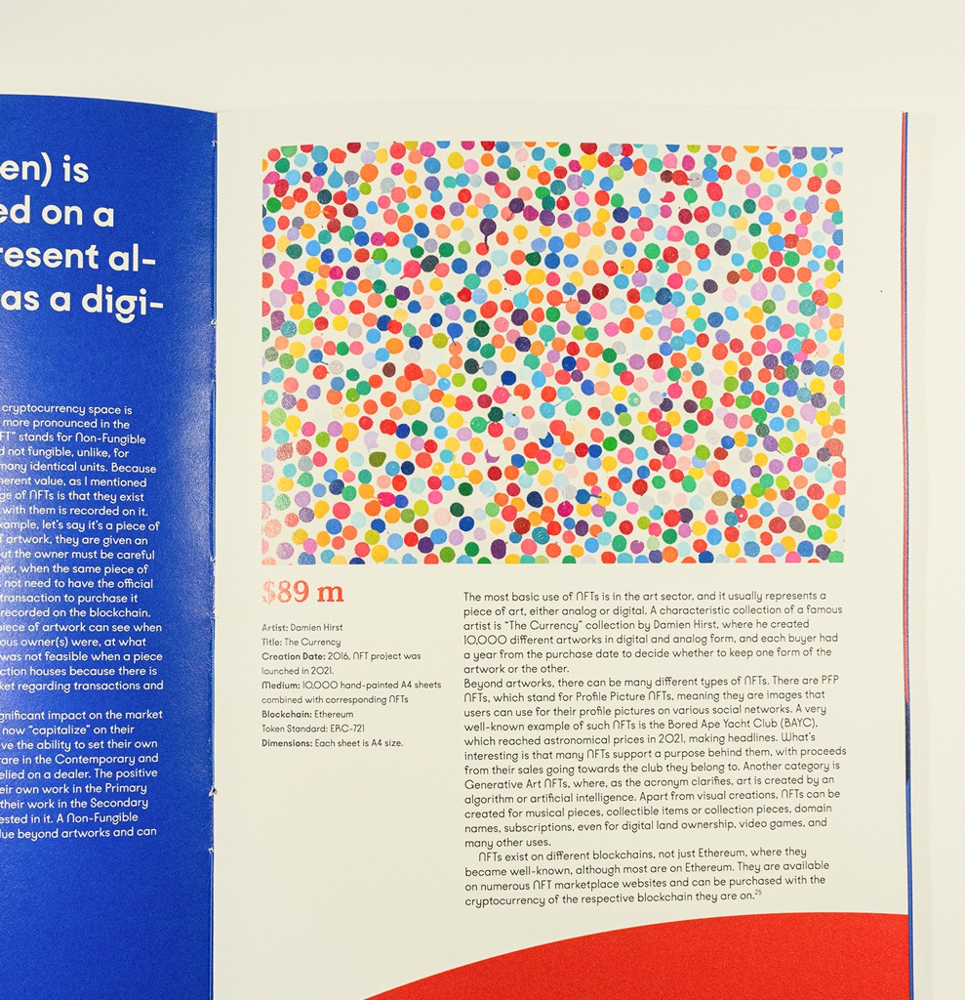
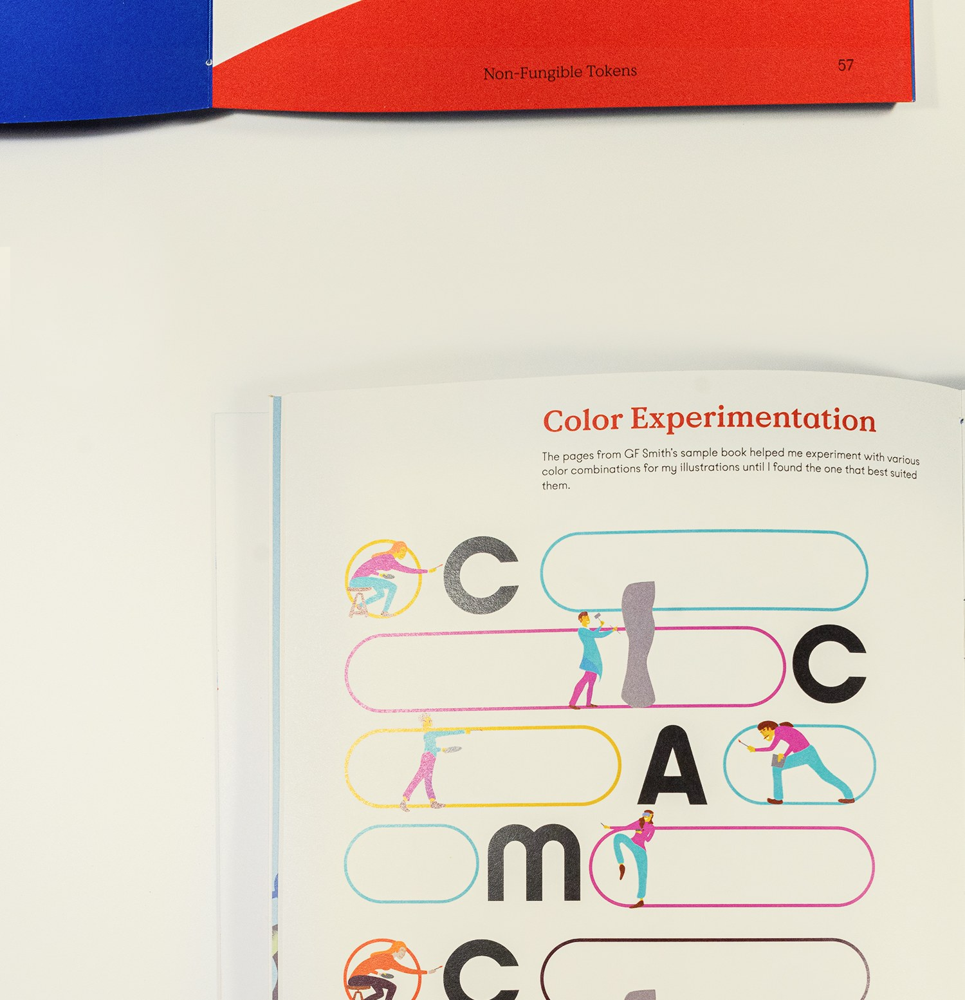
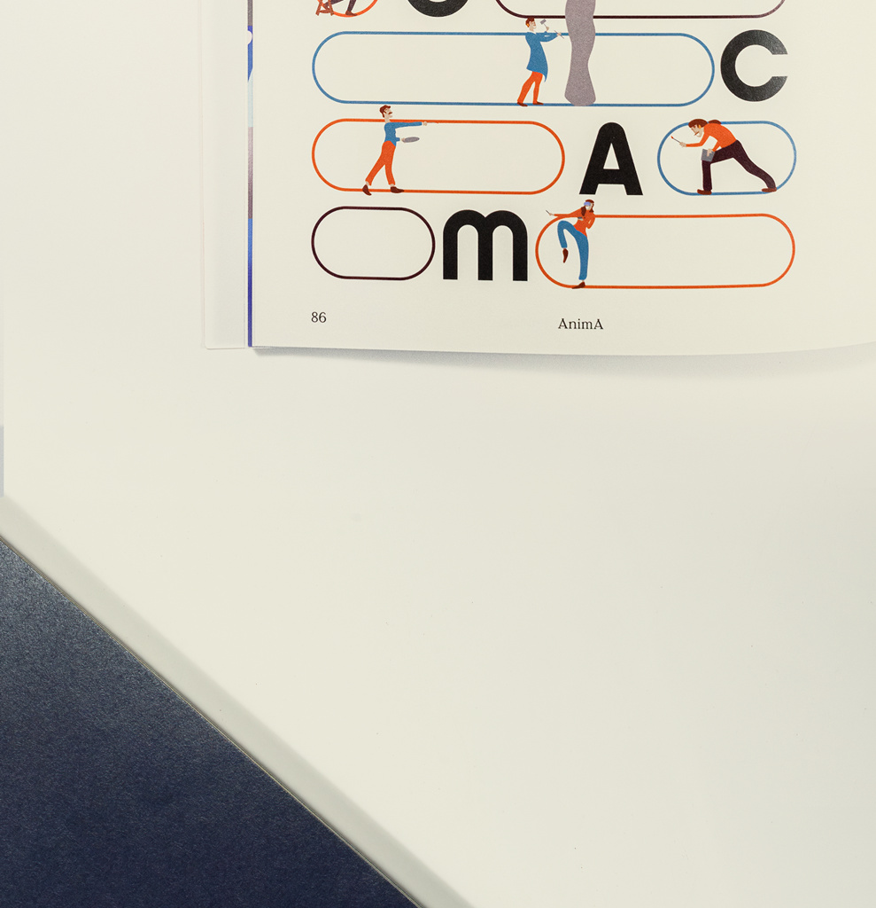
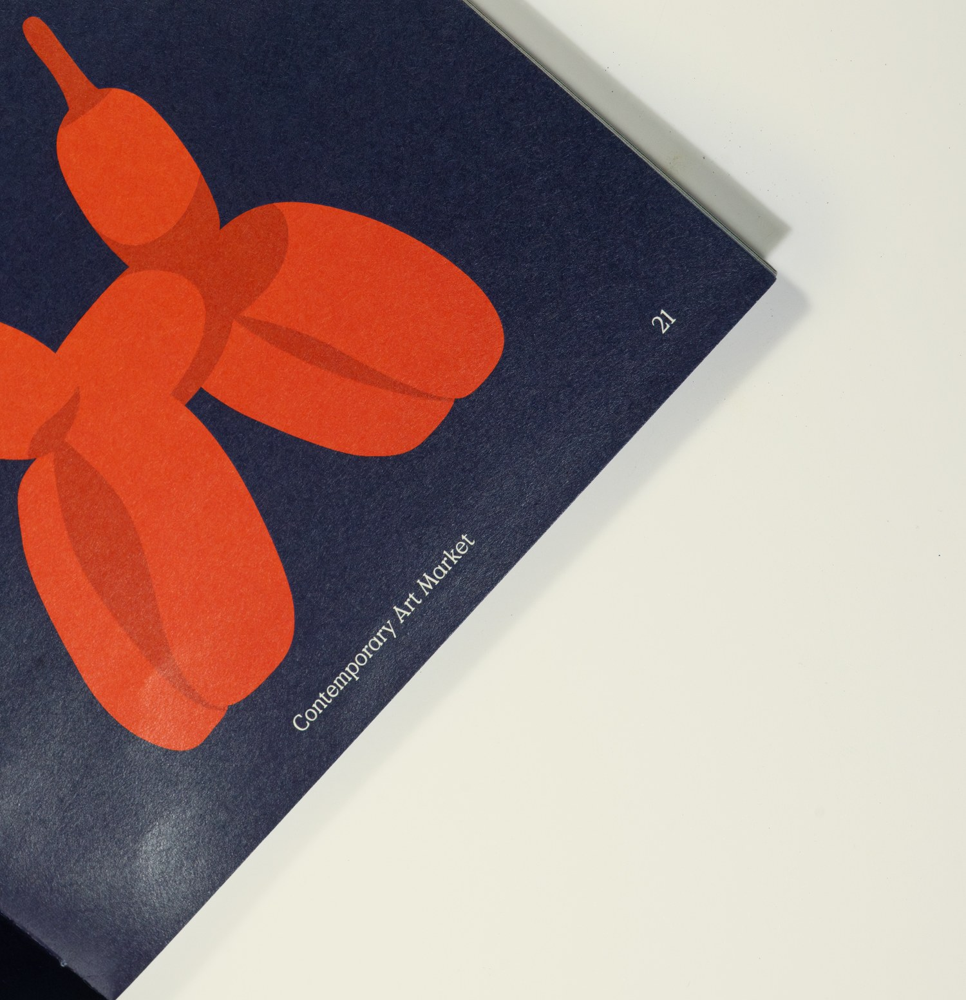
“Did you know that nearly
one-third of the global revenue
from contemporary art
comes from just ten names.”
“How many authors have confused art with beauty, style, technique, etc., while in reality, art is none of these, although they can all be elements in a completed work of art.”
“…Most works of contemporary art
are created outside museums,
in public spaces, for temporary
exhibitions like biennals,
or presented on the internet.”
Abacus
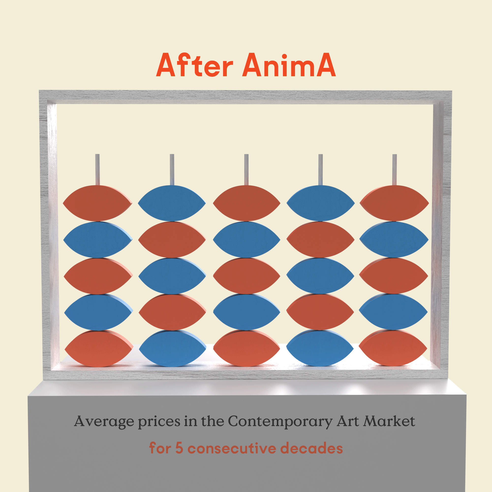
Website Animation
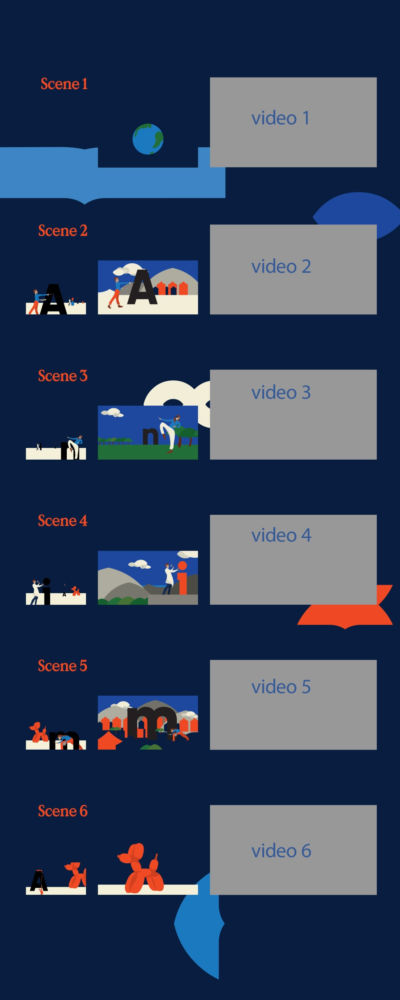